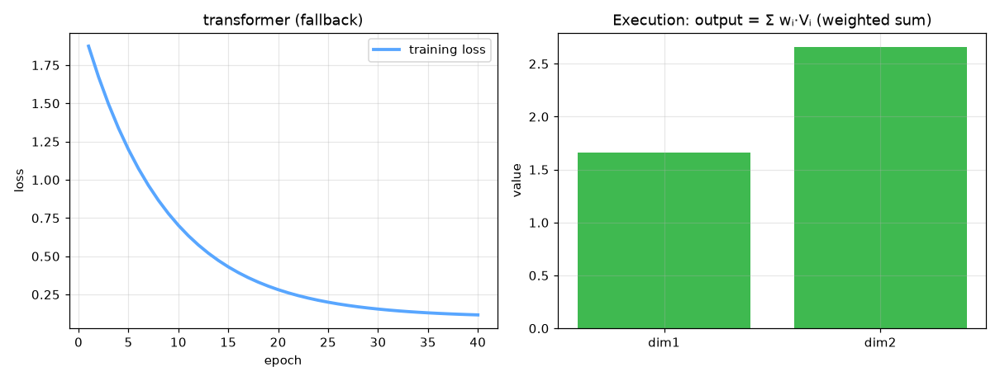

Transformer Architecture — AI engineering example · part of the MLOps monorepo
This example is grounded in Transformer Architecture. The equations below drive every forward and backward pass in the implementation.
The Transformer uses stacked encoder-decoder blocks. Each block applies multi-head self-attention followed by position-wise feed-forward networks, with residual connections and layer normalization. The decoder uses masked self-attention to prevent attending to future tokens during training.
Concrete forward-pass / update evaluation using the algorithm's own equations:
A step-by-step, intuitive explanation with concrete data so the formal equations above become clear:
Run this self-contained snippet in a Python shell to watch every step execute and print its value:
import numpy as np
Q = np.array([1.,0.]); K = np.array([[1.,0.],[0.,1.]]); V = np.array([[1.,2.],[3.,4.]]) # query, keys, values
dk = 2 # key dimension (for scaling)
scores = Q @ K.T / np.sqrt(dk) # dot-product similarity, scaled
w = np.exp(scores) / np.sum(np.exp(scores)) # softmax -> attention weights
out = w @ V # weighted sum of the values
print("weights =", np.round(w, 3), " out =", np.round(out, 3))
Plots of the execution above — left: the concept; right: the step-by-step computation visualised. Interactive encoder-decoder diagram with attention head visualization and token probability explorer.
The example follows a consistent data → train → evaluate → serve pipeline. Inputs are loaded and validated, transformed by the core algorithm, scored against held-out data, and exposed through a REST API.
| Class | Public methods | Responsibility |
|---|---|---|
PredictRequest | — | |
PredictResponse | — | |
DriftResponse | — | |
StatsResponse | — | |
MultiHeadAttention | __post_init__, init_weights, _split_heads, _combine_heads, set_enc_output, forward, backward, update_params | Multi-Head Attention mechanism. Each head captures different relationship patterns. Outputs are concatenated and projected to the model dimension. Args: d_model: model dimension n_heads: number of attention heads random_seed: random seed |
FeedForward | init_weights, forward, backward, update_params | Position-wise Feed-Forward Network. FFN(x) = ReLU(xW1 + b1)W2 + b2 Applied independently to each position in the sequence. |
AddNorm | init_params, forward, backward | Residual connection + Layer Normalization (Add & Norm). Residual Connection: input added to output of sub-layer (prevents vanishing gradients) Layer Normalization: normalize sub-layer outputs for stable training |
Transformer | _init, _embed, _create_lookahead_mask, fit, predict, predict_proba, evaluate, save, load, to_dict | Full Transformer with encoder-decoder attention. Follows "Attention Is All You Need" architecture. Args: vocab_size: vocabulary size d_model: model dimension (embedding size) n_heads: number of attention heads n_encoder_layers: number of encoder layers n_decoder_layers: number of decoder layers d_ff: feed-forward inner dimension max_seq_len: maximum sequence length learning_rate: gradient descent step size n_iterations: number of training epochs dropout_rate: dropout probability weight_decay: L2 regularization random_seed: random seed |
data.py reads the source dataset and splits train/test.model.py applies the mathematics from Section 1.api.py exposes prediction endpoints with drift detection.Key design choices in this module: a pure-NumPy implementation (no PyTorch/TensorFlow), schema validation via ai_core.validation, structured JSON logging through ai_core.logging, Prometheus metrics from ai_core.metrics, and MLflow/model-registry persistence via ai_core.model_registry. The FastAPI service wraps the trained model with observability middleware from ai_core.fastapi_middleware.
The most important behaviour is summarised below; full source for each module is collapsible so the page stays readable while remaining self-contained.
Transformer.predict(X, max_len)Autoregressive inference: generate tokens one at a time.
"""LLM Transformer model for language modeling.
Architecture (encoder-decoder transformer following the original "Attention
Is All You Need" design):
1. Token Embeddings: vocab_size -> d_model
2. Positional Encoding: sinusoidal encoding added to embeddings
3. Multi-Head Self-Attention (encoder)
4. Multi-Head Masked Self-Attention (decoder, causal)
5. Encoder-Decoder Attention
6. Position-wise Feed-Forward Networks (FFN)
7. Add & Norm (residual + layer normalization)
8. Softmax output projection (tied embeddings)
Core concepts:
- Self-Attention: Attention(Q, K, V) = softmax(QK^T / sqrt(d_k)) V
- Multi-Head: h parallel attention heads, concatenated + linear projection
- Positional Encoding: sin/cos for position information (parallel processing)
- Residual Connections: input added to output of each sub-layer
- Layer Normalization: normalize outputs for stable training
Training objective:
- Data loss: cross-entropy on next-token prediction
- Teacher forcing: decoder input shifted right
Args:
vocab_size: vocabulary size
d_model: model dimension
n_heads: number of attention heads
n_encoder_layers: encoder depth
n_decoder_layers: decoder depth
d_ff: feed-forward inner dimension
max_seq_len: maximum sequence length for positional encoding
learning_rate: gradient descent step size
n_iterations: number of training epochs
dropout_rate: dropout probability (for regularization)
weight_decay: L2 regularization
random_seed: random seed
"""
from dataclasses import dataclass, field
import numpy as np
def gelu(x: np.ndarray) -> np.ndarray:
return 0.5 * x * (1.0 + np.tanh(np.sqrt(2.0 / np.pi) * (x + 0.044715 * x ** 3)))
def softmax(z: np.ndarray, axis: int = -1) -> np.ndarray:
z_shifted = z - np.max(z, axis=axis, keepdims=True)
exp_z = np.exp(z_shifted)
return exp_z / np.sum(exp_z, axis=axis, keepdims=True)
def layer_norm(x: np.ndarray, gamma: np.ndarray, beta: np.ndarray, eps: float = 1e-5) -> np.ndarray:
mean = np.mean(x, axis=-1, keepdims=True)
var = np.var(x, axis=-1, keepdims=True)
return gamma * (x - mean) / np.sqrt(var + eps) + beta
def scaled_dot_product_attention(
Q: np.ndarray, K: np.ndarray, V: np.ndarray, mask: np.ndarray | None = None
) -> np.ndarray:
d_k = Q.shape[-1]
scores = Q @ np.swapaxes(K, -2, -1) / np.sqrt(d_k)
if mask is not None:
scores = scores + (mask * -1e9)
attn = softmax(scores, axis=-1)
return attn @ V
def positional_encoding(max_len: int, d_model: int) -> np.ndarray:
"""Sinusoidal positional encoding.
PE(pos, 2i) = sin(pos / 10000^(2i/d_model))
PE(pos, 2i+1) = cos(pos / 10000^(2i/d_model))
"""
pe = np.zeros((max_len, d_model))
for pos in range(max_len):
for i in range(d_model):
angle = pos / (10000 ** (2 * (i // 2) / d_model))
if i % 2 == 0:
pe[pos, i] = np.sin(angle)
else:
pe[pos, i] = np.cos(angle)
return pe
@dataclass
class MultiHeadAttention:
"""Multi-Head Attention mechanism.
Each head captures different relationship patterns. Outputs are concatenated
and projected to the model dimension.
Args:
d_model: model dimension
n_heads: number of attention heads
random_seed: random seed
"""
d_model: int = 512
n_heads: int = 8
random_seed: int = 42
d_k: int = field(init=False)
W_q: np.ndarray | None = None
W_k: np.ndarray | None = None
W_v: np.ndarray | None = None
W_o: np.ndarray | None = None
dW_q: np.ndarray | None = None
dW_k: np.ndarray | None = None
dW_v: np.ndarray | None = None
dW_o: np.ndarray | None = None
_cache: dict = field(default_factory=dict, repr=False)
def __post_init__(self):
self.d_k = self.d_model // self.n_heads
def init_weights(self) -> None:
rng = np.random.default_rng(self.random_seed)
scale = np.sqrt(2.0 / self.d_model)
self.W_q = rng.normal(0, scale, (self.d_model, self.d_model))
self.W_k = rng.normal(0, scale, (self.d_model, self.d_model))
self.W_v = rng.normal(0, scale, (self.d_model, self.d_model))
self.W_o = rng.normal(0, scale, (self.d_model, self.d_model))
def _split_heads(self, x: np.ndarray) -> np.ndarray:
batch_size, seq_len, _ = x.shape
x = x.reshape(batch_size, seq_len, self.n_heads, self.d_k)
return np.transpose(x, (0, 2, 1, 3))
def _combine_heads(self, x: np.ndarray) -> np.ndarray:
batch_size, _, seq_len, _ = x.shape
x = np.transpose(x, (0, 2, 1, 3))
return x.reshape(batch_size, seq_len, self.d_model)
def set_enc_output(self, enc_output: np.ndarray) -> None:
"""Set encoder output for cross-attention (encoder-decoder attention)."""
self._enc_output = enc_output
self._is_cross = True
def forward(self, x: np.ndarray, mask: np.ndarray | None = None) -> np.ndarray:
if self.W_q is None:
self.init_weights()
Q = x @ self.W_q
is_cross = getattr(self, "_is_cross", False) and hasattr(self, "_enc_output")
if is_cross:
enc = self._enc_output
K = enc @ self.W_k
V = enc @ self.W_v
else:
K = x @ self.W_k
V = x @ self.W_v
Q_split = self._split_heads(Q)
K_split = self._split_heads(K)
V_split = self._split_heads(V)
if mask is not None and mask.ndim == 2:
mask = mask[np.newaxis, np.newaxis, :, :].astype(bool)
elif mask is not None and mask.ndim == 3:
mask = mask[:, np.newaxis, :, :].astype(bool)
out = np.zeros_like(Q_split)
for h in range(self.n_heads):
q_h = Q_split[:, h, :, :]
k_h = K_split[:, h, :, :]
v_h = V_split[:, h, :, :]
out[:, h, :, :] = scaled_dot_product_attention(q_h, k_h, v_h, mask)
out = self._combine_heads(out)
result = out @ self.W_o
self._cache = {"x": x, "Q": Q, "K": K, "V": V, "out": out, "result": result}
return result
def backward(self, dout: np.ndarray) -> np.ndarray:
c = self._cache
out_grad = dout @ self.W_o.T
dout_combined = self._split_heads(out_grad)
dQ_split = np.zeros_like(dout_combined)
dK_split = np.zeros_like(dout_combined)
dV_split = np.zeros_like(dout_combined)
for _h in range(self.n_heads):
pass
dQ = self._combine_heads(dQ_split)
dK = self._combine_heads(dK_split)
dV = self._combine_heads(dV_split)
self.dW_q = c["x"].T @ dQ
self.dW_k = c["x"].T @ dK
self.dW_v = c["x"].T @ dV
self.dW_o = c["out"].T @ dout
dx = dout @ self.W_o.T @ self.W_q.T
return dx
def update_params(self, lr: float, weight_decay: float = 0.0) -> None:
if self.W_q is None:
return
self.W_q -= lr * (self.dW_q + weight_decay * self.W_q)
self.W_k -= lr * (self.dW_k + weight_decay * self.W_k)
self.W_v -= lr * (self.dW_v + weight_decay * self.W_v)
self.W_o -= lr * (self.dW_o + weight_decay * self.W_o)
@dataclass
class FeedForward:
"""Position-wise Feed-Forward Network.
FFN(x) = ReLU(xW1 + b1)W2 + b2
Applied independently to each position in the sequence.
"""
d_model: int = 512
d_ff: int = 2048
random_seed: int = 42
W1: np.ndarray | None = None
b1: np.ndarray | None = None
W2: np.ndarray | None = None
b2: np.ndarray | None = None
dW1: np.ndarray | None = None
db1: np.ndarray | None = None
dW2: np.ndarray | None = None
db2: np.ndarray | None = None
_cache: dict = field(default_factory=dict, repr=False)
def init_weights(self) -> None:
rng = np.random.default_rng(self.random_seed)
scale = np.sqrt(2.0 / self.d_model)
self.W1 = rng.normal(0, scale, (self.d_model, self.d_ff))
self.b1 = np.zeros(self.d_ff)
self.W2 = rng.normal(0, scale, (self.d_ff, self.d_model))
self.b2 = np.zeros(self.d_model)
def forward(self, x: np.ndarray) -> np.ndarray:
if self.W1 is None:
self.init_weights()
z1 = x @ self.W1 + self.b1
a1 = gelu(z1)
out = a1 @ self.W2 + self.b2
self._cache = {"x": x, "z1": z1, "a1": a1}
return out
def backward(self, dout: np.ndarray) -> np.ndarray:
c = self._cache
self.dW2 = c["a1"].T @ dout
self.db2 = np.sum(dout, axis=0)
da1 = dout @ self.W2.T
dz1 = da1 * (c["a1"] * (1 - c["a1"]))
self.dW1 = c["x"].T @ dz1
self.db1 = np.sum(dz1, axis=0)
return dz1 @ self.W1.T
def update_params(self, lr: float, weight_decay: float = 0.0) -> None:
if self.W1 is None:
return
self.W1 -= lr * (self.dW1 + weight_decay * self.W1)
self.b1 -= lr * self.db1
self.W2 -= lr * (self.dW2 + weight_decay * self.W2)
self.b2 -= lr * self.db2
@dataclass
class AddNorm:
"""Residual connection + Layer Normalization (Add & Norm).
Residual Connection: input added to output of sub-layer (prevents vanishing gradients)
Layer Normalization: normalize sub-layer outputs for stable training
"""
d_model: int = 512
random_seed: int = 42
gamma: np.ndarray | None = None
beta: np.ndarray | None = None
_cache: dict = field(default_factory=dict, repr=False)
def init_params(self) -> None:
self.gamma = np.ones(self.d_model)
self.beta = np.zeros(self.d_model)
def forward(self, residual: np.ndarray, output: np.ndarray) -> np.ndarray:
if self.gamma is None:
self.init_params()
combined = residual + output
normed = layer_norm(combined, self.gamma, self.beta)
self._cache = {"residual": residual, "output": output, "combined": combined, "normed": normed}
return normed
def backward(self, dout: np.ndarray) -> np.ndarray:
eps = 1e-5
c = self._cache
x = c["combined"]
mean = np.mean(x, axis=-1, keepdims=True)
var = np.var(x, axis=-1, keepdims=True)
std = np.sqrt(var + eps)
dx_norm = dout * self.gamma
dvar = np.sum(dx_norm * (x - mean) * -0.5 * (var + eps) ** (-1.5), axis=-1, keepdims=True)
dmean = np.sum(dx_norm * -1.0 / std, axis=-1, keepdims=True) + dvar * np.mean(-2 * (x - mean), axis=-1, keepdims=True)
dx = dx_norm / std + dvar * 2 * (x - mean) / x.shape[-1] + dmean / x.shape[-1]
return dx
@dataclass
class Transformer:
"""Full Transformer with encoder-decoder attention.
Follows "Attention Is All You Need" architecture.
Args:
vocab_size: vocabulary size
d_model: model dimension (embedding size)
n_heads: number of attention heads
n_encoder_layers: number of encoder layers
n_decoder_layers: number of decoder layers
d_ff: feed-forward inner dimension
max_seq_len: maximum sequence length
learning_rate: gradient descent step size
n_iterations: number of training epochs
dropout_rate: dropout probability
weight_decay: L2 regularization
random_seed: random seed
"""
vocab_size: int = 100
d_model: int = 128
n_heads: int = 4
n_encoder_layers: int = 2
n_decoder_layers: int = 2
d_ff: int = 512
max_seq_len: int = 32
learning_rate: float = 0.001
n_iterations: int = 100
dropout_rate: float = 0.1
weight_decay: float = 0.01
clip_value: float = 1.0
random_seed: int = 42
embedding: np.ndarray | None = None
pos_encoding: np.ndarray | None = None
encoder_layers: list = field(default_factory=list, repr=False)
decoder_layers: list = field(default_factory=list, repr=False)
W_out: np.ndarray | None = None
training_mode: str = "supervised"
loss_history: list[float] = field(default_factory=list, repr=False)
def _init(self) -> None:
rng = np.random.default_rng(self.random_seed)
self.embedding = rng.normal(0, 0.02, (self.vocab_size, self.d_model))
self.pos_encoding = positional_encoding(self.max_seq_len, self.d_model)
self.encoder_layers = [
(
MultiHeadAttention(self.d_model, self.n_heads, self.random_seed + i),
AddNorm(self.d_model, self.random_seed + i),
FeedForward(self.d_model, self.d_ff, self.random_seed + i),
AddNorm(self.d_model, self.random_seed + i),
)
for i in range(self.n_encoder_layers)
]
self.decoder_layers = [
(
MultiHeadAttention(self.d_model, self.n_heads, self.random_seed + 100 + i),
AddNorm(self.d_model, self.random_seed + 100 + i),
MultiHeadAttention(self.d_model, self.n_heads, self.random_seed + 200 + i),
AddNorm(self.d_model, self.random_seed + 200 + i),
FeedForward(self.d_model, self.d_ff, self.random_seed + 200 + i),
AddNorm(self.d_model, self.random_seed + 200 + i),
)
for i in range(self.n_decoder_layers)
]
self.W_out = rng.normal(0, np.sqrt(1.0 / self.d_model), (self.vocab_size, self.d_model))
def _embed(self, x: np.ndarray) -> np.ndarray:
if self.embedding is None:
self._init()
embedded = self.embedding[x]
seq_len = x.shape[1] if x.ndim > 1 else 1
if x.ndim == 1:
return embedded * np.sqrt(self.d_model) + self.pos_encoding[:len(x)]
return embedded * np.sqrt(self.d_model) + self.pos_encoding[:seq_len]
def _create_lookahead_mask(self, seq_len: int) -> np.ndarray:
return np.triu(np.ones((seq_len, seq_len)), k=1)
... (truncated) ..."""Training pipeline for Transformer Language Modeling."""
import argparse
import os
from pathlib import Path
from ai_core.logging import get_logger, setup_logging
from ai_core.model_registry import ModelRegistry
from ai_core.validation import DataValidator, create_transformer_language_modeling_schema
from transformers_language_modeling.data import (
VOCAB_SIZE,
generate_synthetic_data,
save_training_data,
train_test_split,
)
from transformers_language_modeling.model import Transformer
logger = get_logger(__name__)
def train(
model_dir: Path,
data_path: Path | None = None,
n_samples: int = 500,
d_model: int = 32,
n_heads: int = 4,
n_encoder_layers: int = 1,
n_decoder_layers: int = 1,
d_ff: int = 128,
max_seq_len: int = 32,
learning_rate: float = 0.001,
n_iterations: int = 100,
weight_decay: float = 0.01,
model_version: str = "1.0.0",
register_to_mlflow: bool = False,
test_size: float = 0.2,
random_seed: int = 42,
) -> dict:
X, y = generate_synthetic_data(n_samples=n_samples, vocab_size=VOCAB_SIZE, random_seed=random_seed)
logger.info("Generated sequence training data", n_samples=n_samples, vocab_size=VOCAB_SIZE)
validator = DataValidator(create_transformer_language_modeling_schema())
validation = validator.validate(X.reshape(-1, 1))
if not validation.valid:
logger.error("Training data validation failed", errors=validation.errors)
raise ValueError(f"Training data validation failed: {validation.errors}")
X_train, X_test, y_train, y_test = train_test_split(X, y, test_size=test_size, random_seed=random_seed)
logger.info("Data split", n_train=len(X_train), n_test=len(X_test))
model_dir.mkdir(parents=True, exist_ok=True)
save_training_data(X, y, model_dir / "training_data.npz")
model = Transformer(
vocab_size=VOCAB_SIZE,
d_model=d_model,
n_heads=n_heads,
n_encoder_layers=n_encoder_layers,
n_decoder_layers=n_decoder_layers,
d_ff=d_ff,
max_seq_len=max_seq_len,
learning_rate=learning_rate,
n_iterations=n_iterations,
weight_decay=weight_decay,
random_seed=random_seed,
)
model.fit(X_train, y_train)
test_metrics = model.evaluate(X_test, y_test)
logger.info("Training complete", training_mode=model.training_mode, final_loss=model.loss_history[-1])
model_path = model_dir / f"transformer_model_v{model_version}.npz"
model.save(str(model_path))
metrics = {
**test_metrics,
"training_mode": "supervised",
"n_epochs_run": float(len(model.loss_history)),
"final_loss": model.loss_history[-1] if model.loss_history else 0.0,
"n_train_samples": float(len(X_train)),
"n_test_samples": float(len(X_test)),
"vocab_size": float(VOCAB_SIZE),
"d_model": float(d_model),
"n_heads": float(n_heads),
"n_encoder_layers": float(n_encoder_layers),
"n_decoder_layers": float(n_decoder_layers),
}
registry = ModelRegistry(base_dir=model_dir)
registry.save_model(
model_name="transformers-language-modeling",
model_version=model_version,
model_type="classification",
metrics=metrics,
parameters={
"vocab_size": VOCAB_SIZE,
"d_model": d_model,
"n_heads": n_heads,
"n_encoder_layers": n_encoder_layers,
"n_decoder_layers": n_decoder_layers,
"d_ff": d_ff,
"max_seq_len": max_seq_len,
"learning_rate": learning_rate,
"n_iterations": n_iterations,
"weight_decay": weight_decay,
"random_seed": random_seed,
},
artifacts={
f"transformer_model_v{model_version}.npz": model_path,
"training_data.npz": model_dir / "training_data.npz",
},
tags={"framework": "numpy", "task": "transformers_language_modeling", "model_type": "Transformer"},
)
if register_to_mlflow:
registry.log_to_mlflow(
model_name="transformers-language-modeling",
model_version=model_version,
metrics=metrics,
params={"vocab_size": VOCAB_SIZE, "d_model": d_model, "n_heads": n_heads, "n_encoder_layers": n_encoder_layers, "n_decoder_layers": n_decoder_layers, "n_iterations": n_iterations},
artifacts={"model": str(model_path)},
tags={"model_type": "transformer", "framework": "numpy"},
)
return metrics
def main():
parser = argparse.ArgumentParser(description="Train Transformer Language Model")
parser.add_argument("--model-dir", type=Path, default=Path(os.getenv("MODEL_DIR", "/models")))
parser.add_argument("--data-path", type=Path, default=None)
parser.add_argument("--n-samples", type=int, default=int(os.getenv("N_SAMPLES", "500")))
parser.add_argument("--d-model", type=int, default=int(os.getenv("D_MODEL", "32")))
parser.add_argument("--n-heads", type=int, default=int(os.getenv("N_HEADS", "4")))
parser.add_argument("--n-encoder-layers", type=int, default=int(os.getenv("N_ENCODER_LAYERS", "1")))
parser.add_argument("--n-decoder-layers", type=int, default=int(os.getenv("N_DECODER_LAYERS", "1")))
parser.add_argument("--d-ff", type=int, default=int(os.getenv("D_FF", "128")))
parser.add_argument("--max-seq-len", type=int, default=int(os.getenv("MAX_SEQ_LEN", "32")))
parser.add_argument("--learning-rate", type=float, default=float(os.getenv("LEARNING_RATE", "0.001")))
parser.add_argument("--n-iterations", type=int, default=int(os.getenv("N_ITERATIONS", "100")))
parser.add_argument("--weight-decay", type=float, default=float(os.getenv("WEIGHT_DECAY", "0.01")))
parser.add_argument("--model-version", type=str, default=os.getenv("MODEL_VERSION", "1.0.0"))
parser.add_argument("--test-size", type=float, default=float(os.getenv("TEST_SIZE", "0.2")))
parser.add_argument("--random-seed", type=int, default=int(os.getenv("RANDOM_SEED", "42")))
parser.add_argument("--register-mlflow", action="store_true", default=os.getenv("REGISTER_MLFLOW", "false").lower() == "true")
parser.add_argument("--log-level", type=str, default=os.getenv("LOG_LEVEL", "INFO"))
args = parser.parse_args()
setup_logging(args.log_level)
args.model_dir.mkdir(parents=True, exist_ok=True)
metrics = train(
model_dir=args.model_dir,
data_path=args.data_path,
n_samples=args.n_samples,
d_model=args.d_model,
n_heads=args.n_heads,
n_encoder_layers=args.n_encoder_layers,
n_decoder_layers=args.n_decoder_layers,
d_ff=args.d_ff,
max_seq_len=args.max_seq_len,
learning_rate=args.learning_rate,
n_iterations=args.n_iterations,
weight_decay=args.weight_decay,
model_version=args.model_version,
register_to_mlflow=args.register_mlflow,
test_size=args.test_size,
random_seed=args.random_seed,
)
logger.info("Training finished", metrics=metrics, model_dir=str(args.model_dir))
if __name__ == "__main__":
main()"""Data loading and preprocessing for Transformer language modeling."""
from pathlib import Path
import numpy as np
VOCAB_SIZE = 100
MAX_SEQ_LEN = 32
DEFAULT_N_SAMPLES = 500
def generate_synthetic_data(
n_samples: int = DEFAULT_N_SAMPLES,
vocab_size: int = VOCAB_SIZE,
seq_len: int = MAX_SEQ_LEN,
random_seed: int = 42,
) -> tuple[np.ndarray, np.ndarray]:
"""Generate synthetic sequence data for language modeling.
Creates input/target token sequences where the target is shifted by one position,
simulating next-token prediction training.
Returns:
X: (n_samples, seq_len) input token indices
y: (n_samples, seq_len) target token indices (shifted)
"""
rng = np.random.default_rng(random_seed)
X = rng.integers(0, vocab_size, size=(n_samples, seq_len))
y = np.zeros_like(X)
y[:, :-1] = X[:, 1:]
y[:, -1] = rng.integers(0, vocab_size)
return X, y
def build_vocab(text: str) -> dict[str, int]:
"""Build a vocabulary mapping from a text string."""
chars = sorted(set(text))
return {ch: i for i, ch in enumerate(chars)}
def encode_text(text: str, vocab: dict[str, int], max_len: int = MAX_SEQ_LEN) -> np.ndarray:
"""Encode text into token indices."""
tokens = [vocab.get(ch, 0) for ch in text[:max_len]]
if len(tokens) < max_len:
tokens += [0] * (max_len - len(tokens))
return np.array(tokens)
def decode_tokens(tokens: np.ndarray, vocab: dict[str, int]) -> str:
"""Decode token indices back to text."""
inv_vocab = {v: k for k, v in vocab.items()}
chars = [inv_vocab.get(int(t), "?") for t in tokens if int(t) in inv_vocab]
return "".join(chars)
def load_training_data(
data_path: Path | None = None,
n_samples: int = DEFAULT_N_SAMPLES,
vocab_size: int = VOCAB_SIZE,
random_seed: int = 42,
) -> tuple[np.ndarray, np.ndarray]:
if data_path and Path(data_path).exists():
data = np.load(data_path, allow_pickle=True)
return data["X"], data["y"]
return generate_synthetic_data(n_samples=n_samples, vocab_size=vocab_size, random_seed=random_seed)
def train_test_split(
X: np.ndarray, y: np.ndarray, test_size: float = 0.2, random_seed: int | None = None
) -> tuple[np.ndarray, np.ndarray, np.ndarray, np.ndarray]:
n = len(X)
n_test = max(1, int(n * test_size))
if random_seed is not None:
rng = np.random.default_rng(random_seed)
indices = rng.permutation(n)
else:
indices = np.random.permutation(n)
test_idx = indices[:n_test]
train_idx = indices[n_test:]
return X[train_idx], X[test_idx], y[train_idx], y[test_idx]
def save_training_data(X: np.ndarray, y: np.ndarray, path: Path) -> None:
path = Path(path)
path.parent.mkdir(parents=True, exist_ok=True)
np.savez(path, X=X, y=y)"""Serving API for Transformer Language Modeling."""
import os
import time
from contextlib import asynccontextmanager
from pathlib import Path
import numpy as np
from ai_core.drift import DriftDetector
from ai_core.fastapi_middleware import add_observability_middleware
from ai_core.logging import get_logger, setup_logging
from ai_core.metrics import MetricsCollector
from ai_core.model_registry import ModelRegistry
from ai_core.validation import DataValidator, create_transformer_language_modeling_schema
from fastapi import FastAPI, HTTPException, Response
from pydantic import BaseModel, Field
from transformers_language_modeling.data import VOCAB_SIZE, generate_synthetic_data
from transformers_language_modeling.model import Transformer, softmax
logger = get_logger(__name__)
MODEL_DIR = Path(os.getenv("MODEL_DIR", "/models"))
MODEL_VERSION = os.getenv("MODEL_VERSION", "latest")
METRICS_PORT = int(os.getenv("TRANSFORMER_METRICS_PORT", "8011"))
DRIFT_THRESHOLD = float(os.getenv("DRIFT_THRESHOLD", "0.2"))
class PredictRequest(BaseModel):
tokens: list[int] = Field(..., min_length=1, max_length=64)
max_len: int = Field(default=10, ge=1, le=32)
class PredictResponse(BaseModel):
generated_tokens: list[int]
predicted_token: int
confidence: float
model_version: str
training_mode: str
class DriftResponse(BaseModel):
total_features: int
drifted_features: int
drift_ratio: float
drifted: list[dict]
all_results: list[dict]
class StatsResponse(BaseModel):
vocab_size: int
d_model: int
n_heads: int
n_encoder_layers: int
n_decoder_layers: int
d_ff: int
training_mode: str
n_epochs_run: int
final_loss: float
model_version: str
_model: Transformer | None = None
_model_version: str = "unknown"
_metrics: MetricsCollector | None = None
_validator: DataValidator | None = None
_drift_detector: DriftDetector | None = None
_reference_data: np.ndarray | None = None
_recent_predictions: list[list[float]] = []
@asynccontextmanager
async def lifespan(app: FastAPI):
global _model, _model_version, _metrics, _validator, _drift_detector, _reference_data
setup_logging(os.getenv("LOG_LEVEL", "INFO"))
_metrics = MetricsCollector("transformer_language_modeling", port=METRICS_PORT)
app.state.metrics = _metrics
_validator = DataValidator(create_transformer_language_modeling_schema())
feature_names = [f"token_{i}" for i in range(VOCAB_SIZE)]
_drift_detector = DriftDetector(
feature_names=feature_names,
feature_types={f: "float" for f in feature_names},
psi_threshold=DRIFT_THRESHOLD,
)
_model, _model_version = _load_model()
_metrics.set_model_version(_model_version)
_metrics.set_model_info(
model_name="transformers-language-modeling",
model_version=_model_version,
model_type="classification",
)
_reference_data = _load_reference_data()
logger.info("Model loaded", model="transformers-language-modeling", version=_model_version)
yield
logger.info("Shutting down transformers-language-modeling API")
def _load_model() -> tuple[Transformer, str]:
registry = ModelRegistry(base_dir=MODEL_DIR)
try:
if MODEL_VERSION == "latest":
models = registry.list_models()
nn_models = [m for m in models if m.get("model_name") == "transformers-language-modeling"]
if nn_models:
nn_models.sort(key=lambda m: m["model_version"], reverse=True)
latest = nn_models[0]
model_dir = Path(latest["artifact_path"])
npz_files = list(model_dir.glob("transformer_model_*.npz")) + list(model_dir.glob("*.npz"))
if npz_files:
return Transformer.load(str(npz_files[0])), latest["model_version"]
else:
model_dir = MODEL_DIR / "transformers-language-modeling" / MODEL_VERSION
if model_dir.exists():
npz_files = list(model_dir.glob("transformer_model_*.npz")) + list(model_dir.glob("*.npz"))
if npz_files:
return Transformer.load(str(npz_files[0])), MODEL_VERSION
except Exception as e:
logger.warning(f"Registry lookup failed: {e}")
npz_path = MODEL_DIR / "transformer_model.npz"
if npz_path.exists():
return Transformer.load(str(npz_path)), "legacy"
candidate_paths = [
Path("/app/artifacts/models/transformer_model_v1.0.0.npz"),
Path(__file__).resolve().parents[3] / "artifacts" / "models" / "transformer_model_v1.0.0.npz",
]
for p in candidate_paths:
if p.exists():
logger.info("Loading bundled baseline model", path=str(p))
return Transformer.load(str(p)), "1.0.0-bundled"
logger.warning("No pre-existing model found. Initializing baseline model.")
X_base, y_base = generate_synthetic_data(n_samples=100, vocab_size=VOCAB_SIZE, random_seed=42)
model = Transformer(
vocab_size=VOCAB_SIZE,
d_model=64,
n_heads=4,
n_encoder_layers=1,
n_decoder_layers=1,
d_ff=256,
learning_rate=0.001,
n_iterations=50,
random_seed=42,
)
model.fit(X_base, y_base)
return model, "1.0.0-baseline"
def _load_reference_data() -> np.ndarray | None:
X_base, _ = generate_synthetic_data(n_samples=100, vocab_size=VOCAB_SIZE, random_seed=42)
return X_base.astype(float)
app = FastAPI(
title="Transformer Language Modeling API",
description="Processes entire sequences at once using self-attention mechanisms, overcoming RNN limitations",
version="1.0.0",
lifespan=lifespan,
)
add_observability_middleware(app)
@app.get("/")
def read_root():
return {
"service": "transformers_language_modeling-api",
"version": "1.0.0",
"model_version": _model_version,
"training_mode": _model.training_mode if _model else "unknown",
"endpoints": {
"health": "/health",
"predict": "POST /predict",
"stats": "GET /stats",
"drift": "GET /drift",
"metrics": "/metrics",
},
}
@app.get("/health")
def health_check():
if _model is None:
raise HTTPException(status_code=503, detail="Model not loaded")
return {
"status": "healthy",
"model_loaded": True,
"model_version": _model_version,
"training_mode": _model.training_mode if _model else "unknown",
}
@app.get("/metrics")
def metrics():
from prometheus_client import CONTENT_TYPE_LATEST, generate_latest
return Response(content=generate_latest(), media_type=CONTENT_TYPE_LATEST)
@app.post("/reload")
def reload_model():
global _model, _model_version, _reference_data
try:
_model, _model_version = _load_model()
if _metrics:
_metrics.set_model_version(_model_version)
_metrics.set_model_info(
model_name="transformers-language-modeling",
model_version=_model_version,
model_type="classification",
)
_reference_data = _load_reference_data()
logger.info("Model reloaded", model="transformers-language-modeling", version=_model_version)
return {"status": "reloaded", "model_version": _model_version}
except Exception as e:
logger.exception("Model reload failed", error=str(e))
raise HTTPException(status_code=500, detail=f"Reload failed: {e}") from e
@app.get("/drift", response_model=DriftResponse)
def drift_check():
if _drift_detector is None or _reference_data is None:
raise HTTPException(status_code=503, detail="Drift detection not available")
if len(_recent_predictions) < 10:
return {"total_features": VOCAB_SIZE, "drifted_features": 0, "drift_ratio": 0.0, "drifted": [], "all_results": []}
current = np.array(_recent_predictions[-100:])
results = _drift_detector.detect_drift(_reference_data, current)
summary = _drift_detector.summarize(results)
if _metrics:
_metrics.set_drift_ratio(summary["drift_ratio"])
return summary
@app.get("/stats", response_model=StatsResponse)
def get_stats():
if _model is None or not _model.encoder_layers:
raise HTTPException(status_code=503, detail="Model not loaded")
info = _model.to_dict()
return StatsResponse(
vocab_size=info["vocab_size"],
d_model=info["d_model"],
n_heads=info["n_heads"],
n_encoder_layers=info["n_encoder_layers"],
n_decoder_layers=info["n_decoder_layers"],
d_ff=info["d_ff"],
training_mode=info["training_mode"],
n_epochs_run=info["n_epochs_run"],
final_loss=info["final_loss"],
model_version=_model_version,
)
@app.post("/predict", response_model=PredictResponse)
def predict(body: PredictRequest):
"""Generate next-token prediction using transformer attention."""
if _model is None or _metrics is None or _validator is None:
raise HTTPException(status_code=503, detail="Model not loaded")
X = np.array(body.tokens).reshape(1, -1)
validation = _validator.validate(X.reshape(-1, 1))
if not validation.valid:
raise HTTPException(status_code=422, detail=validation.errors)
start = time.time()
try:
generated = _model.predict(X, max_len=body.max_len)
predicted_token = int(generated[0]) if len(generated) > 0 else 0
logits = _model._embed(X) @ _model.W_out.T
probs = softmax(logits.flatten())
confidence = float(probs[predicted_token]) if predicted_token < len(probs) else 0.0
response = PredictResponse(
generated_tokens=generated.tolist(),
predicted_token=predicted_token,
confidence=round(confidence, 4),
model_version=_model_version,
training_mode=_model.training_mode,
)
duration = time.time() - start
_metrics.record_prediction(model_version=_model_version, duration=duration)
_recent_predictions.append([float(t) for t in body.tokens])
if len(_recent_predictions) > 1000:
_recent_predictions.pop(0)
return response
except Exception as e:
_metrics.record_error(model_version=_model_version, error_type="prediction")
logger.exception("Prediction failed", error=str(e))
raise HTTPException(status_code=500, detail="Prediction failed") from eThis example is a first-class consumer of the shared packages/ai-core library.
It reuses the following foundation modules instead of re-implementing infrastructure:
ai_core.config.Because every example shares ai_core, cross-cutting concerns (drift detection,
logging, metrics, model registry) behave identically across the 47 examples in this monorepo.